![]()
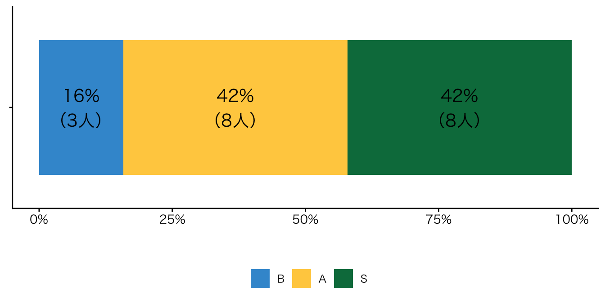
Ⅰ. 講評
1. 全体
成績を付け終えましたので、成績分布や成績評価の基準をまとめておきます。全体を通して、私が当初意図した以上に、よい授業になりました。皆さんが主体的に授業に参加してくれたおかげだと思っています。どうもありがとうございます。
「共通教育科目」の「自由履修科目」は、専門科目とは違い、履修者の数や関心を想定しがたく、また、大学が「共通教育科目」「自由履修科目」を設置している意味を見失いがちになり、実質的に初歩的な専門科目になりがちです。ですが、この授業は、一部の学類の受講生が多かったとはいえ、学類を超えた活発な交流がなされ、強制ではなく好きで授業を受けている様子が見られ、私自身、あらためて、共通教育科目の意義を確認することができました。
1年生ですので、本の選択の専門性については、焦らずに、今後、皆さんが考えていけばいいと思っています。一部の受講生は専門性のある本を選ぶことができていましたし、必ずしも専門的ではない本の選択であっても、自分なりに専門との接続を考えることができている受講生もいました。レポートを読む限り、多くの受講生が他の受講生のよい点を発見し、見習おうという成長する姿勢が垣間見えました。
また、プレゼンテーションの質問の時間に自主的に多くの手が挙がった点もこのクラスのとても良い点だと思います（レポートや、最後の授業の感想で、私と同じ意見を持っている方が何名もいました）。私が質問することは差し控えていましたが、私が心の中でなかで聞きたいと思っていることを、受講生が質問してくれる場面が何度もありました。また、私が気が付かない観点での質問も多く、私自身、興味深く質疑応答を聞くことができました。
初回授業の際に少し話したことですが、校務で高大接続に関わっており、1冊の本を高校生と一緒に読む、などの企画を実施しています。皆さんが取り上げた本の多くは、高校生が興味をもって読むことができるものだと思いました。特に、医学系に関しては、私の専門から大きく外れているために、よい本を選べていないという実感をもっています。来年度以降、皆さんが取り上げた本を高校生と一緒に読んでみようと思っています。
2. 成績分布
以下の図のように、多くの受講生にA評価を付けることができました。Sは、概ね、私と受講生の双方の評価が高い者、Aは、概ね、私もしくは受講生の評価が高い者に付けました。B、Cは、私の評価というよりは「授業の感想」の提出回数に起因しています。
細かな評価基準は、シラバスや初回授業の際に説明した通りですが、変更した箇所が1点あります。シラバスにおける「受講態度」は、私が評価を付ける受講態度（10点）と、グループチャンプ本に選ばれた者に付ける受講態度（10点）としていましたが、グループチャンプ本に選ばれる受講生が私が当初思った以上に偏在しており、この得点の有無が実質的に、AかBを決める状態になりました。私が当初意図した評価基準や、私が授業で観察した受講態度から大きく逸脱したため、全員に+5点を課し、「受講態度」点を補正しています。
3. 学期末振り返りレポート
レポート評価は、出題文や出題意図を踏まえながら、ルーブリック「本の選択と紹介」「関心の広がり」に従って行いました。満点は、竹田さん、ヌリン ウマイラさん、大下さん、坂田さんの4名でした。平均点は8.4点です。詳しい分布は次項の図を参照下さい。
私が求めている振り返りレポートのイメージが、英語圏で言うReflective Writingであることも関わっているのだと思うのですが、4人の中でも、ヌリン ウマイラさんのレポートがとりわけ印象に残りました。単なる感想を超えて、俯瞰的に自分自身の取り組みを捉えることができていると思います。すべて紹介したいところですが、主要な一節だけ引用します。
Through this course, my interests broadened in ways I did not expect at the beginning. At first, I saw reading mostly as a personal activity, something I did quietly by myself to escape other things. However, encountering so many different books and listening to classmates’ presentations made me realize how social and interactive reading can be. Each student chose a completely different kind of book, and this variety opened new doors for me. I was especially surprised by how much I enjoyed genres that I normally avoid, such as Japanese nonfiction. Seeing how others interpreted themes from their point of view like loneliness, menta wellness, way of thinking or identity encouraged me to explore these topics from multiple viewpoints.
日本語は、主語を明示しない関係もあって、何がどうなったのかがわかりにくい傾向にありますが、例えば’this variety opened new doors for me’のような一節は、端的に何がどうなったのかが上手く表現できていると思います。
他の受講生の印象に残った一節は以下の通りです。
質問をしようという意識を持つことで、授業への向き合い方が全く変わってくるなと感じた。自分が発表した時に聞き手が質問してくれたら嬉しいし、ちゃんと聞いてくれていた気がして発表してよかったなという気持ちになる。みんなで授業を作り上げていこうという意識をもつためにも、この授業にかかわらず常に聴きたいと思う気持ちは大切にしていこうと思った（大下さん）
私は将来、地域医療に携わっていくことになる。そのため、診察室の中だけで患者を見るのではなく、地域の環境や生活背景を知る姿勢が欠かせないと感じている。「病気ではなく人を見る」という医療の基本を実践するには、 フィールドワークのように現場に目を向ける視点が必要だと、本を読みながら改めて気づかされた（坂田さん）
最も驚いたのは人文学類に興味を持ってもらえたこと。私は心理学がしたい。という強い思いを素直に伝えたら、たくさんの質問という形で興味を示してもらった。本当にうれしかった（竹田さん）
本の選択に関しては正直工夫できた点がない。ビブリオバトルが初めてで、愛読書という基点がないことが主な理由だ。直感で選んできた本を紹介し、紹介するたびにビブリオバトルには向いてないと思い、次の週もう一度同じ本でやる時にいい紹介法を見つけるという感じだった（土山さん）
4. ルーブリックに準拠する項目の成績分布
「ブックカード」「授業の感想」のような機械的に成績を付けているもの以外の、成績分布を紹介しておきます。こちらも、ルーブリックに沿って評価を付けました。「受講態度」の10点（満点）は、ルーブリック「グループワーク」の項目（「授業にもっとも積極的に参加している受講生の一人であり、グループワークの準備や質疑応答などでもグループを常にリードしている」）を準用して、プレゼンテーションの際に積極的に質問した受講生に付けました。
⑴.プレゼンテーション
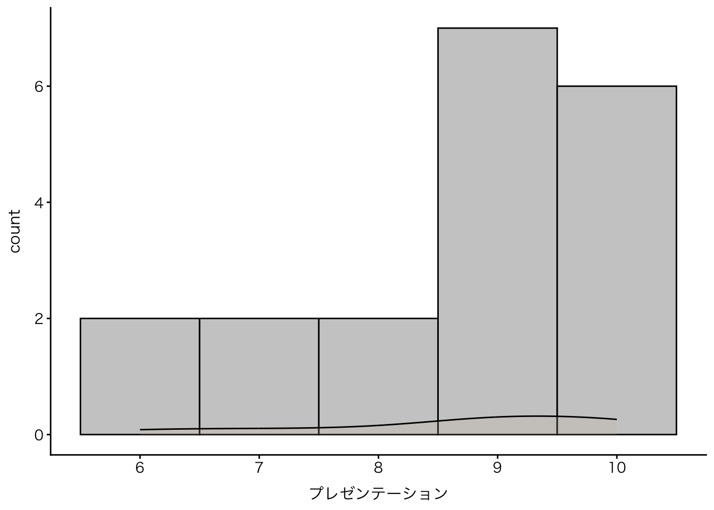
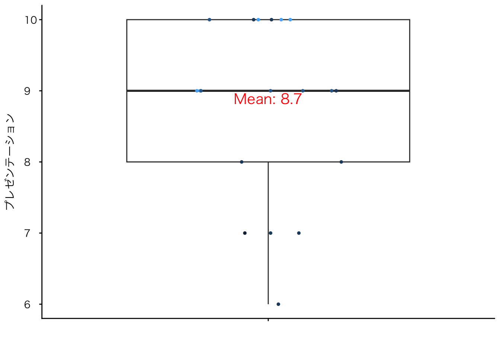
⑵ 受講態度
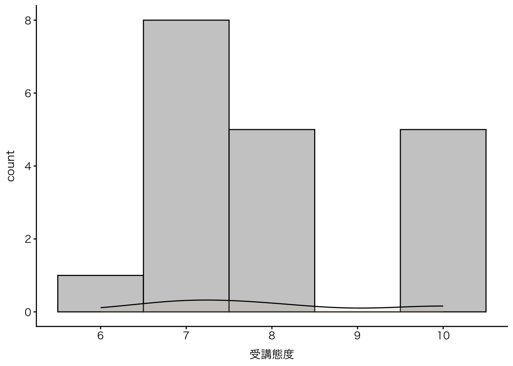
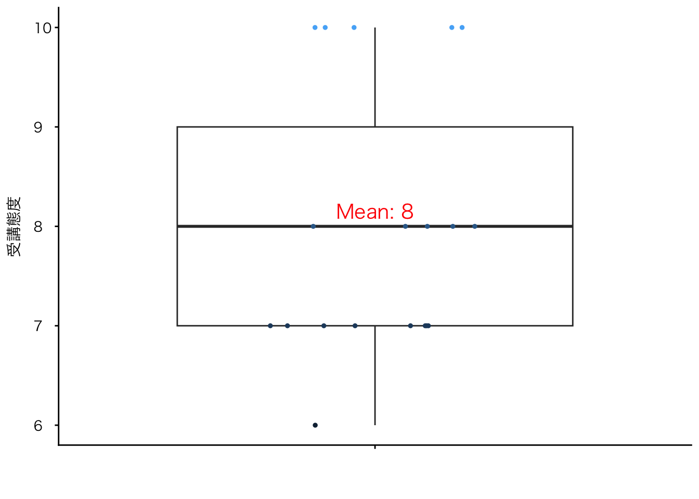
⑶学期末振り返りレポート

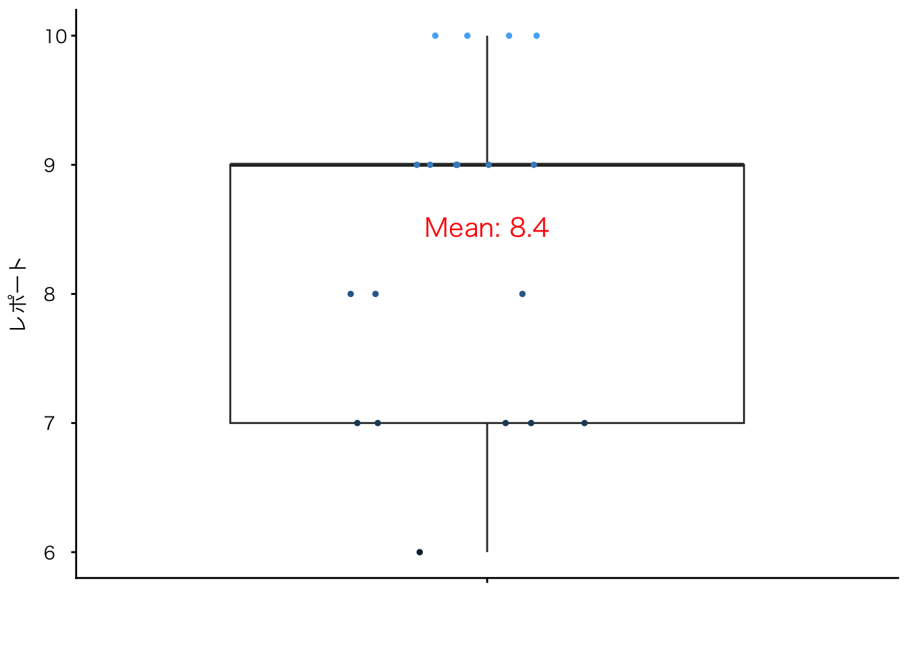
5. ルーブリックに準拠する項目の成績分布以外
冒頭で書いたように、成績評価のグレードに大きく関わった項目に、授業の感想と受講態度_グループチャンプ本があるので、ヒストグラムにまとめておきます。
⑴授業の感想（提出回数に準拠する得点）
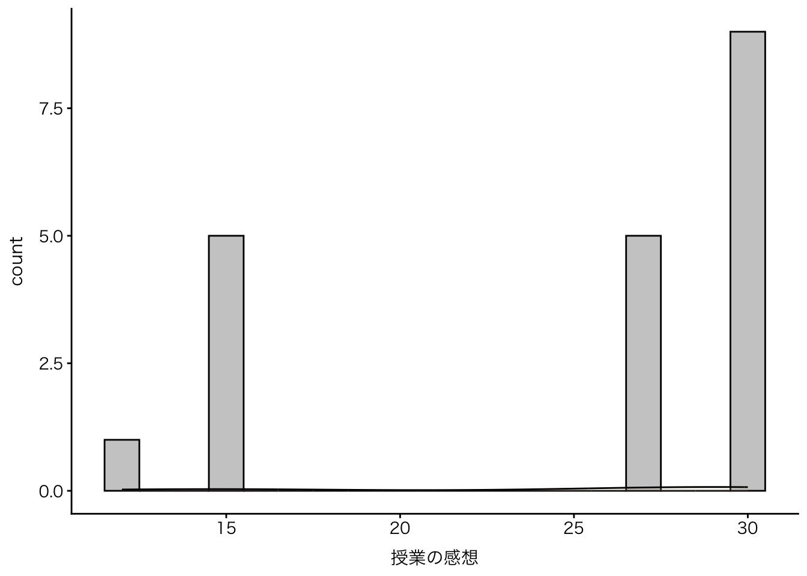
⑵受講態度_グループチャンプ本（選出回数に準拠する得点）
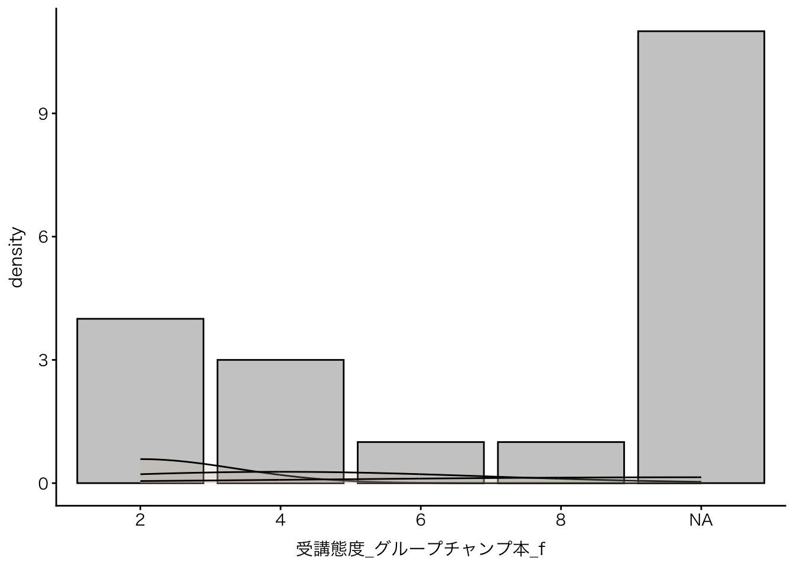
6. アナウンス
- 成績開示
- 12月8日(月) 7:00から
- 成績疑義申請開始
- 12月8日(月) 7:00から
Ⅱ. 学期末授業アンケート
リッカート（4件法）で尋ねた、成長についての自己認識についてですが、以下の通り、ほとんどの受講生が成長を実感できているようです。私もそうだと思っています。初回次にとった同様のアンケートと見比べても、皆さんの成長具合がわかります。
アンケート回収率
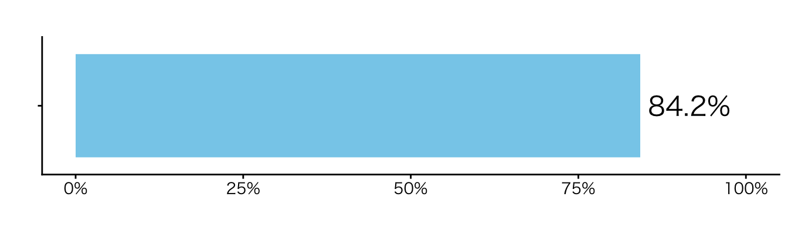
本の選択と紹介
- Q2. 本を選び、要点をまとめ、人に紹介することについての自己認識を教えて下さい
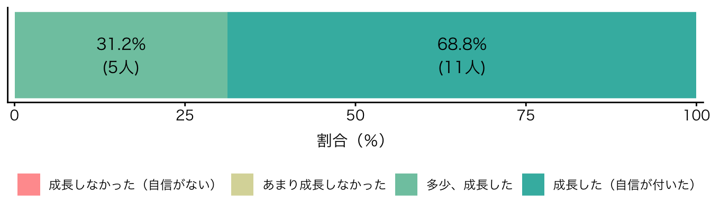
グループワーク
- Q3. 興味をもって人の話を聞き、積極的に質疑応答に参加することについての自己認識を教えて下さい
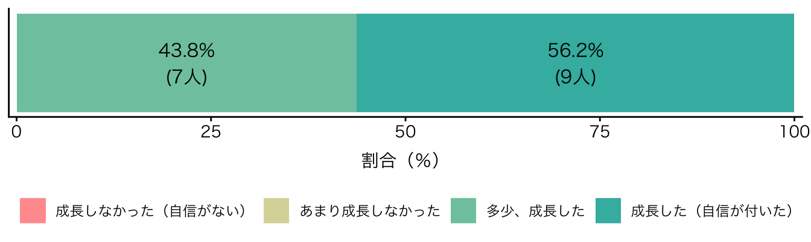
他分野への関心
- Q4. 他の人の紹介する本に触れることによって、様々な分野に関心を広げることについての自己認識を教えて下さい
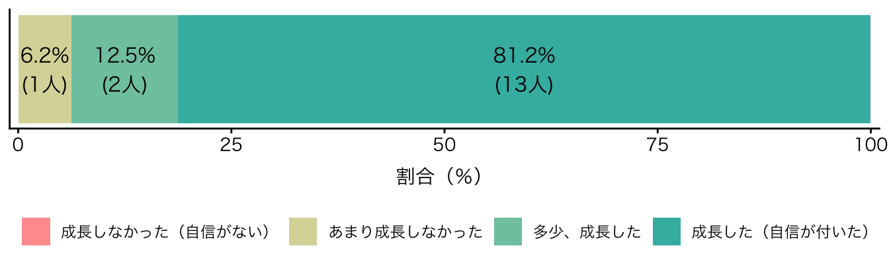
プレゼンテーション
- Q5. 20人程度の人前に立ち、プレゼンテーションを演出することについての自己認識を教えて下さい

Q6. 自由記述
- 前向きな感想だけでなく、具体的な改善案も、多くの受講生が書いてくれました。私からは見えにくかった点ですが、カードでランダムにグループ編成していても、同じメンバーが揃ってしまうケースがままあったようです。趣旨から考えて（特に、各ビブリオバトルの第1ラウンドと第2ラウンドで重なる場合）よくないと思いますので、次年度は改善したいと思います。これ以外の提案については、時間配分の見直しを含むので、全体像を見直す際に考えてみます。ご意見、ありがとうございました。